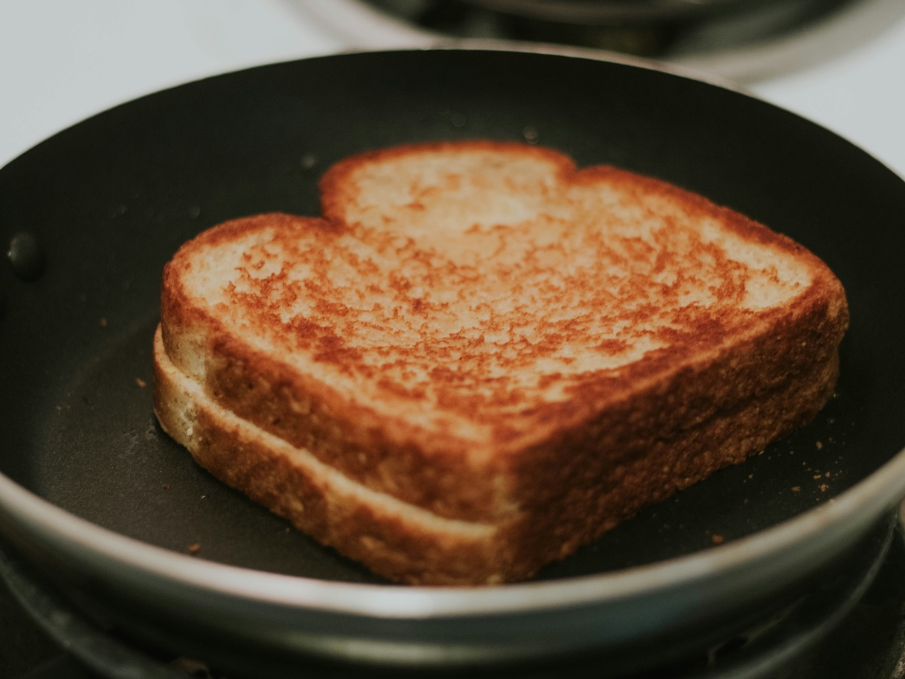

Home
Grilled Cheese

Description
A good grilled cheese sandwich as a quick and easy recipe to make in a pinch. I often find myself adding this grilled cheese recipe to my dinner list as a failsafe for a craz day.
Ingredients
- 6 slices of your favorite bread
- a pack of American cheese slices
- 1 jar of mayonnaise
- 1/2 stick of butter
Steps
- Prepare a medium pan on medium heat, spraying well with cooking oil.
- While the pan is heating, prepare your first sandwhich by spreading mayo inside both slices. Add cheese as well, followed by spreading butter on the outside of both slices.
- Set sandwhich down in pan and cook on first side for 1 minute.
- Flip sandwhich over, cooking on the other side for 1 minute.
- Ensure cheese is melted and transfer to plate. Eat and enjoy!